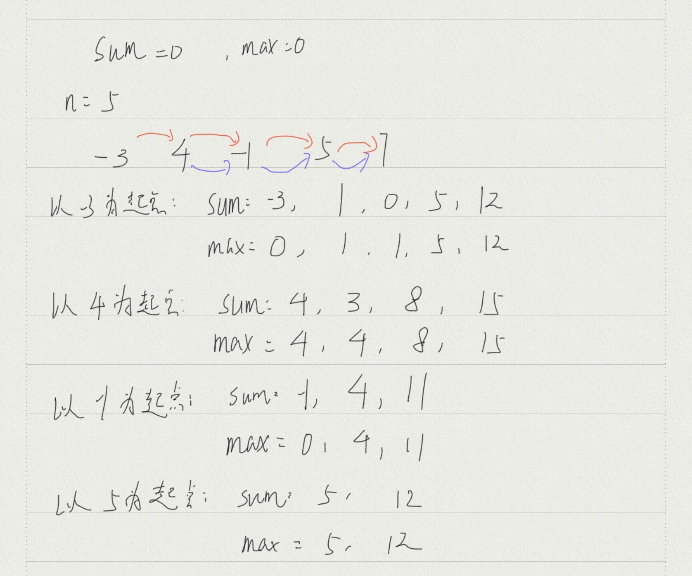
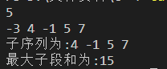
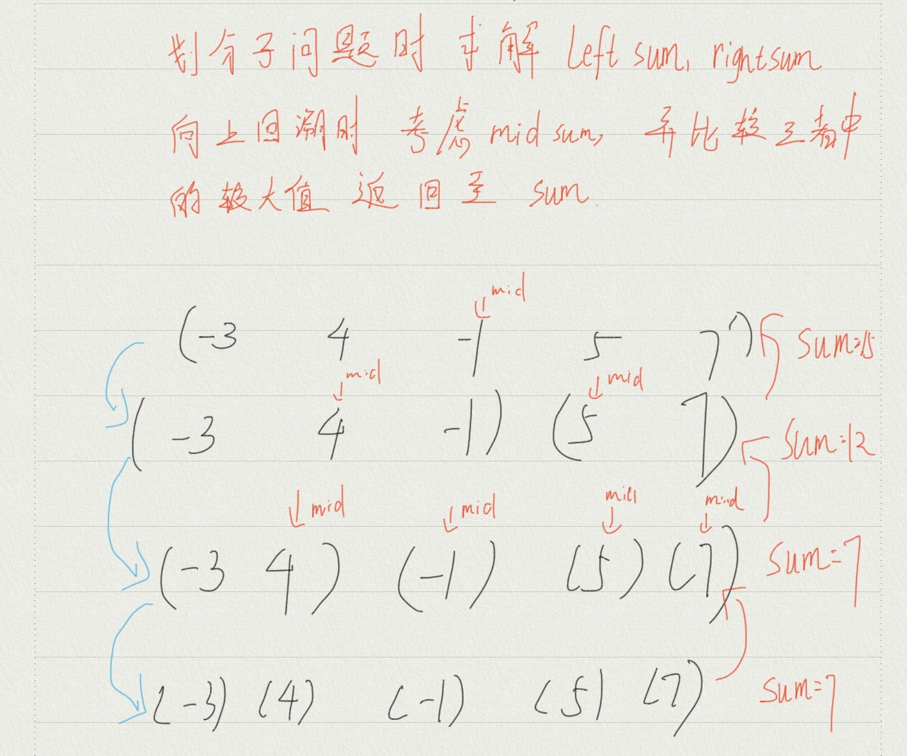
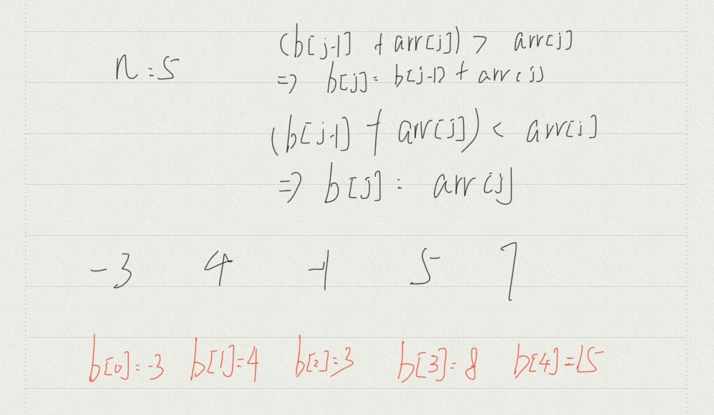
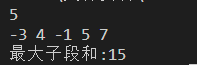

实验报告_3
实验五——最大子段和
一、实验题目
给定由n个整数组成的序列(a1, a2, …, an)，求该序列形如 的子段和的最大值，当所有整数均为负整数时，其最大子段和为0。
二、实验目的
- 深刻掌握动态规划法的设计思想并能熟练运用
- 同样的问题能以不同方法解决
三、实验要求
- 分别用蛮力法、分治法和动态规划法设计最大子段和问题的算法
- 比较不同算法的时间性能
- 给出测试数据，写出程序文档
四、算法实现分析及结果
- 蛮力法
直接使用双重循环，判断以当前起点出发的当前子段和是否大于最大子段和，若大于则更改最大子段和的值，若不大于则直接开始下一次循环
- 蛮力法核心代码
1 | void result(int *arr,int n) |
- 蛮力法具体过程：

- 时间复杂性分析
$$
时间复杂性:O(n*n)
$$
- 蛮力法实验结果

- 分治法
采用分治法和递归思想时，需要将序列分为左序列和右序列两部分，并判断最大子段和是在左序列，右序列，还是在两个序列的交叉部分。如果在左序列或者右序列，则直接递归即可，若在交叉部分，则需要以序列中点为轴，分别向左右相加，求得一个子段和，并与左序列或右序列中的较大值进行比较，以返回一个子问题中的最大子段和。分治法的核心思想就是将问题划分成若干个子问题，再分别求解，最终再合并子问题。
- 分治法核心代码
1 | int MaxSum(int a[],int left,int right) |
- 分治法具体过程

- 时间复杂性分析
$$
时间复杂度:O(n*log(n))
$$
- 分治法实验结果
- 动态规划法
动态规划法的三个步骤：
- 划分子问题，每个子问题对应一个决策，寻找子问题间的重叠关系
- 确定动态规划函数：找到满足子问题的递归关系式
- 填表
在最大子段和问题中，填表较为简单，是一张一维表格。寻找最大子段和的过程中，首先将序列第一个元素设为最大子段和，再从第二个元素开始与已确定的最大子段和相加，判断和是否大于第二个元素，如果大于则更新最大子段和，如果小于则将第二个元素设为最大子段和，依次类推。
- 动态规划法核心代码
1 | //arr数组记录序列元素值 b数组记录指针指向当前元素时的最大子段和 |
- 动态规划法具体过程

- 时间复杂性分析
$$
时间复杂度:O(m+n)
$$
- 动态规划法实验结果

五、实验感悟
最大子段和问题求解过程使用了三种思想：蛮力法，分治法，动态规划法。蛮力法的解题思想无需过多赘述，直接使用双重for循环判断即可。分治法思想就是将序列进行划分递归，直到问题不可再分，则开始求解问题并向上回溯合并子问题。动态规划法相较于前两种算法，较难理解，但是动态规划法求解最优解过程是最科学的。由局部最优解组成全局最优解。建表的过程通过指针移动来不断记录当前最优解，当表记录到最后时则得到了最优解。动态规划法相较于其他算法大幅度降低了时间复杂度，但是对于不同问题，动态规划法设计动态规划函数的过程很不同，导致动态规划法实现过程较为困难。